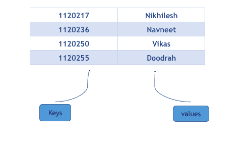
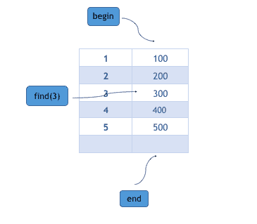

STL 中的映射容器
映射用于复制关联数组。映射包含排序的键值对，其中每个键都是唯一的，不能更改，可以插入或删除，但不能更改。与键关联的值可以更改。我们可以在O(n)时间复杂度内搜索、移除和插入映射。
例如:以卷号为键，以名为值的学生映射，可以图形化表示为:

请注意，键是按升序排列的，因为映射总是按排序顺序排列键。如果键是字符串类型的，则按字典顺序排序。
用 C++ STL 创建映射
使用以下语句可以轻松创建映射:
**map**<key_type , value_type> *map_name*;
这将创建一个键类型为键类型为值类型为值类型为的映射。需要记住的一点是，映射的键和相应的值总是成对插入，您不能在映射中只插入键或值。
下面是一个程序，将说明如何以不同的方式创建映射:
#include <iostream>
#include <map>
using namespace std;
int main ()
{
**map**<int,int> m{ {1,2} , {2,3} , {3,4} };
*/* creates a map m with keys 1,2,3 and
their corresponding values 2,3,4 */*
**map**<string,int> map1;
*/* creates a map with keys of type character and
values of type integer */*
map1["abc"]=100; *// inserts key = "abc" with value = 100*
map1["b"]=200; *// inserts key = "b" with value = 200*
map1["c"]=300; *// inserts key = "c" with value = 300*
map1["def"]=400; *// inserts key = "def" with value = 400*
**map**<char,int> map2 (map1.begin(), map1.end());
*/* creates a map map2 which have entries copied
from map1.begin() to map1.end() */*
**map**<char,int> map3 (m);
*/* creates map map3 which is a copy of map m */*
}
C++ STL 中映射的成员函数
以下是 STL 中映射容器的一些常用功能:
at和[ ]
位于和[ ]的都用于访问映射中的元素。它们之间唯一的区别是处的在被访问的键不在映射中时抛出异常，另一方面，如果该键不在映射中，运算符[ ]将该键插入到映射中。
#include <iostream>
#include <map>
using namespace std;
int main ()
{
**map**<int,string> m{ {1,”nikhilesh”} , {2,”shrikant”} , {3,”ashish”} };
cout << m.**at**(1) ; *// prints value associated with key 1 ,i.e nikhilesh*
cout << m.**at**(2) ; *// prints value associated with key 2 ,i.e shrikant*
*/* note that the parameters in the above at() are the keys not the index */*
cout << m[3] ; *// prints value associated with key 3 , i.e ashish*
m.**at**(1) = "vikas"; *// changes the value associated with key 1 to vikas*
m[2] = "navneet"; *// changes the value associated with key 2 to navneet*
m[4] = "doodrah";
*/* since there is no key with value 4 in the map,
it insert a key-value pair in map with key=4 and value = doodrah */*
m.**at**(5) = "umeshwa";
*/* since there is no key with value 5 in the map ,
it throws an exception */*
}
empty、size和max_size
empty()如果映射为空，则返回布尔真，否则返回布尔假。size()返回映射中的条目数，一个条目由一个键和值组成。max_size()根据分配给映射的内存，返回映射可以包含的条目上限(最大可能条目数)。
insert和insert_or_assign
insert()用于在映射中插入条目。因为键在映射中是唯一的，所以它首先检查给定的键是否已经存在于映射中，如果存在，则不在映射中插入条目，并且返回现有键的迭代器，否则在映射中插入新的条目。
insert()有两种变体:
insert(pair<key_type value_type="">)</key_type>:在这个变体中，一对键和值被插入到映射中。插入的键对总是被插入到适当的位置，因为键是按排序顺序排列的。insert(start_itr , end_itr):该变体在另一个映射的 start_itr 和 end_itr 定义的范围内插入条目。
insert_or_assing()的工作方式与 insert()完全相同，只是如果给定的键已经存在于映射中，那么它的值会被修改。
#include <iostream>
#include <map>
using namespace std;
int main ()
{
**map**<int,int> m{{1,2} , {2,3} , {3,4} };
m.**insert**( pair<int,int> (4,5));
*/* inserts a new entry of key = 4 and value = 5 in map m */*
*/* make_pair() can also be used for creating a pair */*
m.**insert**( make_pair(5, 6));
*/* inserts a new entry of key = 5 and value = 6 */*
map<int>::iterator i , j;
i = m.**find**(2); * // points to entry having key =2*
j = m.**find**(5); *// points to entry having key =5*
**map**<int,int> new_m;
new_m.**insert**(i,j);
* /* insert all the entries which are pointed
by iterator i to iterator j*/*
m.**insert**( make_pair(3,6));
* // do not insert the pair as map m already contain key = 3 */*
m.**insert_or_assign**( make_pair(3,6)); *// assign value = 6 to key =3 *
}</int>
erase和clear
erase()从迭代器指向的映射中移除条目(作为参数传递)，但是如果我们想从映射中移除所有元素，我们可以使用clear()，它会清除映射并将其大小设置为 0。
擦除有两种变体:
erase(iterator_itr):这将从迭代器迭代器 _itr 指向的映射中移除条目，将映射的大小减少 1。erase(start_iterator, end_iterator):删除开始迭代器和结束迭代器指定范围内的元素。
begin、end和find
begin、end 和 find 返回一个迭代器。begin()将迭代器返回到映射的起始条目，end()将迭代器返回到映射中最后一个条目旁边，find()将迭代器返回到具有等于给定键的键的条目(作为参数传递)。
